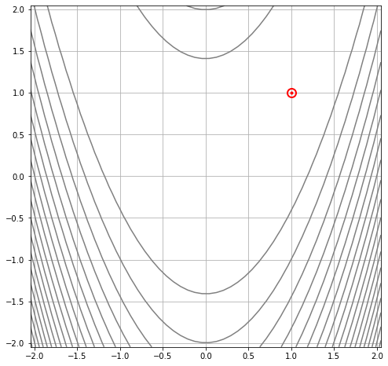
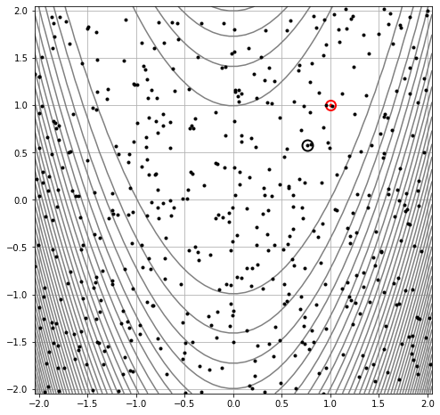
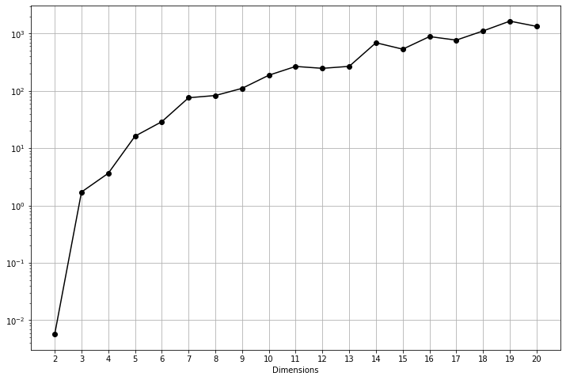
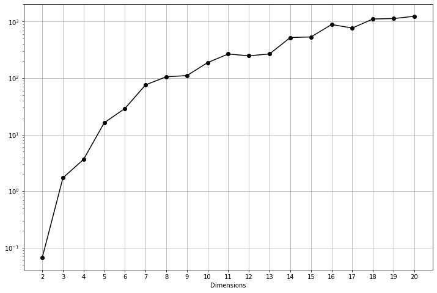

Optimización de Monte Carlo
30:00 min | Última modificación: Mayo 21, 2021 | [YouTube]
Definición del problema
[1]:
#
# Para ejemplificar su uso, buscará el punto de mínima de
# la función de Rosenbrock de dos dimensiones. El punto de
# mínima es f(1, 1) = 0. La región de búsqueda es
#
# -2.048 < x, y < 2.048
#
# A continuación se gráfica la función y su contorno para
# el caso de 2 dimensiones.
#
from EOS.benchmarks import Rosenbrock
fn = Rosenbrock(n_dim=2)
fn.plot_surface()

[2]:
#
# El punto rojo indica el mínimo de la función
#
fn.plot_contour()

Algoritmo
[3]:
#
# Crea una función que genera soluciones uniformemente
# distribuidas en el hipercubo definido por los límites
# low y high
#
from EAOS.generators import RandomUniform
POPSIZE = 500
monte_carlo = RandomUniform(
pop_size=POPSIZE,
low=fn.LB,
high=fn.UB,
seed = 123456,
)
#
# Genera una muestra aleatoria de 500 soluciones
#
solutions = monte_carlo()
solutions[:5]
[3]:
[{'x': array([ 0.55916032, -0.47181142]), 'fn_x': None},
{'x': array([-1.85366355, 1.86471522]), 'fn_x': None},
{'x': array([ 1.66318464, -0.1762527 ]), 'fn_x': None},
{'x': array([-0.89893488, 0.5576655 ]), 'fn_x': None},
{'x': array([1.96899098, 1.2797206 ]), 'fn_x': None}]
[4]:
#
# Crea una instancia del evaluador que permite evaluar la
# función de rosenbrock para cada elemento de la muestra
# de soluciones
#
from EOS.fnevaluator import FnEvaluator
evaluator = FnEvaluator(fn)
#
# Evalua la muestra aleatoria
#
solutions = evaluator(solutions)
solutions[:5]
[4]:
[{'x': array([ 0.55916032, -0.47181142]), 'fn_x': 61.733921834747115},
{'x': array([-1.85366355, 1.86471522]), 'fn_x': 255.05853052990307},
{'x': array([ 1.66318464, -0.1762527 ]), 'fn_x': 866.2326798368231},
{'x': array([-0.89893488, 0.5576655 ]), 'fn_x': 9.87689230733496},
{'x': array([1.96899098, 1.2797206 ]), 'fn_x': 675.4862719988924}]
[5]:
#
# Ordena la muestra por el valor de la función objetivo
#
from EOS.operators import SelectionBest
select = SelectionBest(k=POPSIZE)
solutions = select(solutions)
solutions[:5]
[5]:
[{'x': array([0.7672115 , 0.57737045]), 'fn_x': 0.06683107378195952},
{'x': array([0.7970882 , 0.58614213]), 'fn_x': 0.28331072212685754},
{'x': array([1.02338792, 0.99125291]), 'fn_x': 0.31493062592442145},
{'x': array([1.34463207, 1.74876381]), 'fn_x': 0.4700834252368894},
{'x': array([0.31481491, 0.12501742]), 'fn_x': 0.5366062129010523}]
[11]:
#
# Se grafican los puntos generados aleatoriamente sobre el
# contorno de la función.
#
import matplotlib.pyplot as plt
X = [s.x[0] for s in solutions]
Y = [s.x[1] for s in solutions]
fn.plot_contour(levels=40)
plt.gca().plot(X, Y, ".k")
plt.gca().plot(
solutions[0].x[0],
solutions[0].x[1],
"o",
c="k",
fillstyle="none",
markersize=12,
markeredgewidth=2,
)
plt.show()

Experimento 1
[13]:
#
# En este se experimento se tomaran 10.000 puntos y se
# grafica el mejor punto encontrado contra la cantidad de
# dimensiones
#
import numpy as np
POPSIZE = 10000
select = SelectionBest(k=POPSIZE)
best_fn_x = []
for n_dim in range(2, 21):
fn = Rosenbrock(n_dim=n_dim)
monte_carlo = RandomUniform(
pop_size=POPSIZE,
low=fn.LB,
high=fn.UB,
seed = 123456,
)
solutions = monte_carlo()
evaluator = FnEvaluator(fn)
solutions = evaluator(solutions)
solutions = select(solutions)
best_fn_x.append(0.00000001 + solutions[0].fn_x)
plt.figure(figsize=(12,8))
plt.plot(list(range(2, 21)), best_fn_x, 'o-k')
plt.yscale('log')
plt.grid()
plt.xticks(np.arange(2, 21, 1))
plt.xlabel('Dimensions')
plt.show()
#
# La figura muestra como el valor del óptimo se degrada con
# la cantidad de dimensiones manteniendo la cantidad de
# puntos evaluados fija. Este método no mejora en
# comparación con la búsqueda exhaustiva ya que operan de
# forma similar.
#

Experimento 2
[14]:
#
# En este experimento la cantidad de puntos evaluados será
# 1.000 * la cantidad de dimensiones del problema. Esto es,
# para 2 dimensiones se evaluarán 2.000 puntos, para 3 se
# evaluarán 3.000 puntos y así sucesivamente
#
best_fn_x = []
for n_dim in range(2, 21):
fn = Rosenbrock(n_dim=n_dim)
monte_carlo = RandomUniform(
pop_size=1000*n_dim,
low=fn.LB,
high=fn.UB,
seed = 123456,
)
solutions = monte_carlo()
evaluator = FnEvaluator(fn)
solutions = evaluator(solutions)
solutions = select(solutions)
best_fn_x.append(0.00000001 + solutions[0].fn_x)
plt.figure(figsize=(12,8))
plt.plot(list(range(2, 21)), best_fn_x, 'o-k')
plt.yscale('log')
plt.grid()
plt.xticks(np.arange(2, 21, 1))
plt.xlabel('Dimensions')
plt.show()
#
# La figura muestra como el valor del óptimo se degrada con
# la cantidad de dimensiones manteniendo la cantidad de
# puntos evaluados fija. Aunque la cantidad de puntos
# evaluados aumenta con la cantidad de dimensiones, no se
# percibe una mejora, en comparación con la gráfica
# anterior
#
